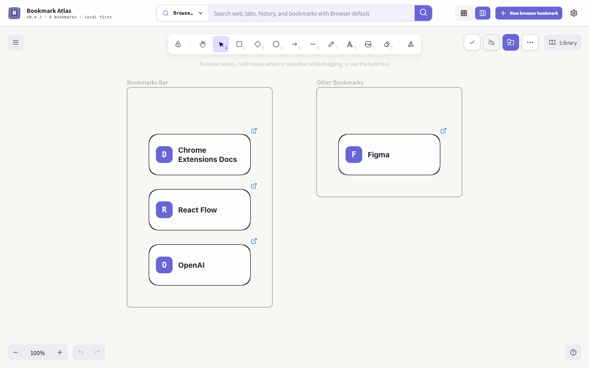

Bookmark Atlas for Microsoft Edge
Your new tab.
Room for your ideas.
A full Excalidraw canvas for Edge favorites, notes, drawings and interactive webpage or video embeds.
Native favorites · Local first · AI optional
Public Edge installation is not yet available. The install link will appear here after publication.

Edge review status
Edge v0.9.7 was submitted for review on 2026-10-26. Local Edge functionality is accepted by the user; two-device sync acceptance is pending and will be tested after submission.
Chrome’s published release remains 0.9.6. This Edge submission does not announce a Chrome 0.9.7 release.
Save it.
Make it useful.
Keep your native Edge favorites and arrange references on a flexible canvas. Manual organization needs no model account.
Add
Capture the current page from the extension icon. A native favorite is saved and its canvas insertion is queued locally until successfully saved. Or import existing favorites.
Organize
Choose icon, compact or detailed cards, then add notes, frames, drawings and arrows with the full Excalidraw toolset.
Open
Click the card’s favicon to open its website, or search favorites, open tabs and history.
Local first.
Choose what leaves.
Read the complete policyKeep a full copy
The full canvas and attachments stay local. Eligible lightweight data may be written to browser sync storage with a supported Edge account and matching extension identity. A local status does not prove remote delivery. Export a full backup for a complete copy.
AI is optional
Approve selected card IDs, titles, domains, existing descriptions and your instruction before sending. Preview before applying. Your provider’s fees and policies apply. Saved API keys are encrypted locally, excluded from sync and backups, and are not an OS keychain.
Help shape the next canvas.
Report an issue or suggest another website adaptation.